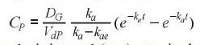

31. La concentración de una droga en el cuerpo Cp se puede representar mediante la ecuación:

donde D es la dosis administrada (mg), V es el volumen de distribución (L),
k, es la tasa de absorción constante (h-1), k, es la tasa de eliminación constante
(h¹), y t es la tiempo (h) desde que se administró el fármaco. Para un fármaco
determinado, se dan las siguientes cantidades: DG = 150 mg, V = 50
L, ka = 1,6 h¹ y k₂ = 0,4 h¹.
(a) Se administra una dosis única en t = 0. Calcule y represente gráficamente Cp frente a t
durante 10 h.
(b) Se administra una primera dosis en t = 0, y posteriormente cuatro dosis más
Capítulo 6: Programación en MATLAB
se administran a intervalos de 4 h (es decir, en t = 4, 8, 12, 16). Calcule y
grafique Cp versus t durante 24 h.
Calcular el perimetro La concentración de una droga en el cuerpo Cp: